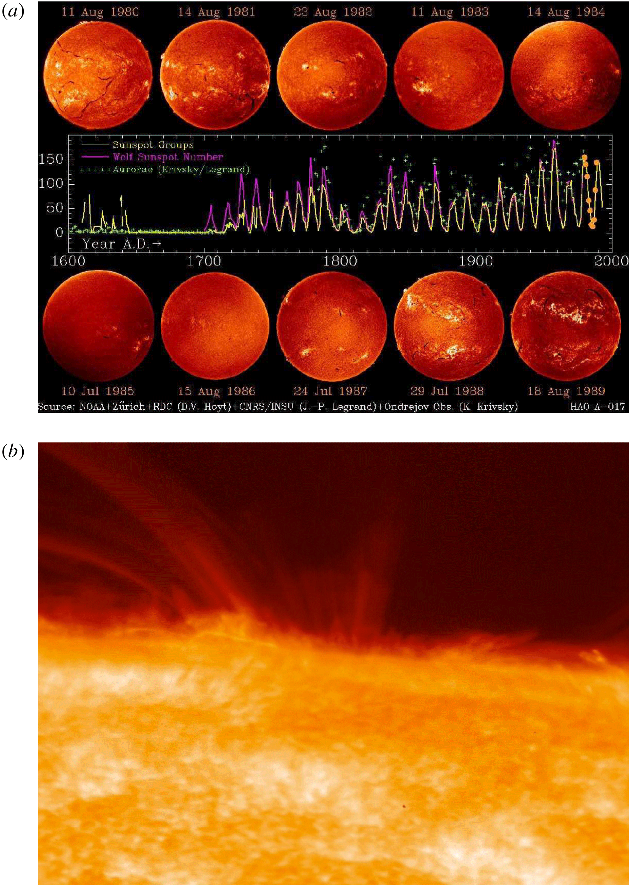

Evolution of Solar and Stellar Dynamo Theory
in ‘Solar and Stellar Dynamo: A New Era’
Outline
- Introduction to MHD dynamo theory
- Paper
Introduction
What is dynamo theory about?
The origin, amplification, saturation and sustainment, of magnetic fields in the universe
- on the Earth, other planets and their satellites (“planetary magnetism”)
- in the Sun and other stars (“stellar magnetism”)
- in galaxies, clusters and the early universe (“cosmic magnetism”)
If you care about magnetic fields, you might care about dynamo theory.
Magnetic fields in the universe



Takeaway phenomenological points
- Many astrophysical objects have global, ordered fields
- Differential rotation, global symmetries and geometry are important
- Coherent structures and MHD instabilities may also be very important
- Motivation for the development of “large-scale” dynamo theories
- Lots of “small-scale”, random fields also discovered from the 70s
- These come hand in hand with global magnetism
- Simultaneous development of “small-scale dynamo” theory
- Astrophysical magnetism is in a nonlinear, saturated state
- Linear theory not the whole story (or using it requires non-trivial justification)
- Multiple scale interactions expected to be important
MHD equations
MHD induction equation
\[\frac{\partial \mathbf{B}}{\partial t}=\nabla \times(\mathbf{u} \times \mathbf{B}-\eta \nabla \times \mathbf{B})\]
Incompressible, resistive, viscous MHD
\[\frac{\partial \mathbf{u}}{\partial t}+\mathbf{u} \cdot \nabla \mathbf{u}=-\nabla P+\mathbf{B} \cdot \nabla \mathbf{B}+\nu \Delta \mathbf{u}+\mathbf{f}(\mathbf{x}, t)\]
Lenz’s Law
Electromagnetic induction suppresses rather enhances the seed magnetic field.
Anti-dynamo theorem
Observations around solar activity minimum suggest that,the large-scale solar magnetic field is axisymmetric about the rotation axis.
\[ \mathbf{B}(r, \theta, t)=\nabla \times\left(A(r, \theta, t) \hat{\mathbf{e}}_\phi\right)+B(r, \theta, t) \hat{\mathbf{e}}_\phi . \]
\[ \mathbf{u}(r, \theta)=\mathbf{u}_{\mathrm{p}}(r, \theta)+\varpi \Omega(r, \theta) \hat{\mathbf{e}}_\phi, \]
MHD induction equation
\[\begin{gathered}\frac{\partial A}{\partial t}=\underbrace{\eta\left(\nabla^2-\frac{1}{\varpi^2}\right) A}_{\text {resistive decay }}-\underbrace{\frac{\mathbf{u}_{\mathrm{p}}}{\varpi} \cdot \nabla(\varpi A)}_{\text {transport }}, \\ \frac{\partial B}{\partial t}=\underbrace{\eta\left(\nabla^2-\frac{1}{\varpi^2}\right) B+\frac{1}{\varpi} \frac{\partial(\varpi B)}{\partial r} \frac{\partial \eta}{\partial r}}_{\text {resistive decay }}-\underbrace{\varpi \mathbf{u}_{\mathrm{p}} \cdot \nabla\left(\frac{B}{\varpi}\right)}_{\text {transport }} \\ -\underbrace{B \nabla \cdot \mathbf{u}_{\mathrm{p}}}_{\text {compression }}+\underbrace{\varpi\left(\nabla \times\left(A \hat{\mathbf{e}}_\phi\right)\right) \cdot \nabla \Omega}_{\text {shearing }} .\end{gathered}\]
Anti-dynamo theorem
Cowling’s theorem
An axisymmetric flow cannot sustain an axisymmetric magnetic field against resistive decay.
Zel’dovich’s theorem
Planar, two-dimensional motions cannot excite a dynamo.
Others
- A purely toroidal flow cannot excite a dynamo
- A magnetic field of the form \(B(x, y, t)\) alone cannot be a dynamo field.
A minimal geometric complexity is required for dynamos to work.
From toroidal to poloidal
We have no choice but to look for some fundamentally non-axisymmetric process to provide an additional source term in MHD induction equation.
- Turbulence and mean-field electrodynamics
- The Babcock–Leighton mechanism
- Hydrodynamical and magnetohydrodynamical instabilities (from the rotational shear layer, tachocline)
Paper
Tension: Why Is Mean-Field Electrodynamics Working?
Separating the flow and magnetic field into large-scale, slowly varying “mean” component \(〈U〉, 〈B〉\) and small-scale rapidly varying “turbulent” components \(\boldsymbol{u}, \boldsymbol{b}\)
\[ \begin{gathered} \boldsymbol{U}=\langle\mathbf{U}\rangle + \boldsymbol{u}, \\ \boldsymbol{B}=\langle\mathbf{B}\rangle + \boldsymbol{b} . \end{gathered} \]
Occasionally interpreted as a decomposition into axisymmetric and non-axisymmetric field components in systems with a rotation axis.
\[ \frac{\partial\langle\mathbf{B}\rangle}{\partial t}=\nabla \times(\langle\mathbf{U}\rangle \times\langle\mathbf{B}\rangle+\xi-\eta \nabla \times\langle\mathbf{B}\rangle) \] where the mean electromotive force \(\xi\) is given by the average of the small-scale flow-field cross-correlation: \[ \xi=\left\langle\mathbf{u} \times \mathbf{b}\right\rangle \]
Mean-Field Electrodynamics
Closure is achieved by expanding this turbulent electromotive force (emf) \(\boldsymbol{\xi}\) in terms of \(\langle\mathbf{B}\rangle\) and its derivatives:
\[ \xi_i=a_{i j}\left\langle B_j\right\rangle+b_{i j k} \frac{\partial\left\langle B_j\right\rangle}{\partial x_k}+\cdots \]
This is not a linearization procedure, in that we are not assuming that:
\[\left|\boldsymbol{u}\right| /|\langle\boldsymbol{U}\rangle| \ll 1\]
\[\left|\boldsymbol{b}\right| /|\langle\boldsymbol{B}\rangle| \ll 1\]
Tension: Why Is Mean-Field Electrodynamics Working?
The challenge is now to compute these tensorial quantities from known statistical properties of the turbulent flow
Tractable physical regimes:
- The energy density of the mean magnetic field is larger than the energy density of the small-scale field;
- The magnetic Reynolds number is low;
- The turbulent cyclonic eddies have a lifetime shorter than their characteristic turnover time.
Tension(s): From Solar to Stellar Dynamos
Babcock–Leighton mechanism

The net effect of BMRs is taking a formerly toroidal internal magnetic field and converting a fraction of its associated flux into a net surface dipole moment.
The larger sunspot pairs (‘‘bipolar magnetic regions’’, hereafter BMR) often emerge with a systematic tilt with respect to the E–W direction, in that on average, the leading sunspot (with respect to the direction of solar rotation) is located at a lower latitude than the trailing sunspot, the more so the higher the latitude of the emerging BMR (see, e.g., Stenflo and Kosovichev 2012; McClintock and Norton 2013). This pattern is known as ‘‘Joy’s law’’. The tilt of the magnetic axis of a BMR implies a non-zero projection along the N–S direction, which amounts to a dipole moment. The decay of BMRs and subsequent dispersal of their magnetic flux by surface flows can release a fraction of this dipole moment and contribute to the global dipole.
Tension(s): From Solar to Stellar Dynamos
Hydrodynamical and magnetohydrodynamical instabilities

The tachocline is the rotational shear layer uncovered by helioseismology immediately beneath the Sun’s convective envelope, providing a smooth match between the latitudinal differential rotation of the envelope, and the rigidly rotating radiative core (see, e.g., Spiegel and Zahn 1992; Brown et al. 1989; Tomczyk et al. 1995; Gough and McIntyre 1998; Charbonneau et al. 1999, and references therein).
Tension(s): From Solar to Stellar Dynamos
- Which is the primary polarity reversal mechanism: α-effect, or Babcock–Leighton, . . . or something else?
- How do differential rotation and meridional circulation vary with rotation rate, luminosity, and internal structure?
- How do turbulent coefficients (α-effect, turbulent pumping, turbulent diffusion) vary with rotation rate, luminosity, and internal structure?
- How do sunspots and BMRs form and decay in stars of varying structure (in particularly, depth of convective envelope), rotation rate and luminosity?
Unifying dynamo framework applicable to both the sun and solar type stars of varying spectral type, luminosity, and rotation rate.
References
- Tobias, S. M. (2021). The turbulent dynamo. Journal of Fluid Mechanics, 912, P1. 10.1017/jfm.2020.1055
- Rincon, François. 2019. “Dynamo Theories.” Journal of Plasma Physics. 10.1017/S0022377819000539.
- Rincon, Francois. 2019. “Introduction to MHD Dynamos.” Presentation Link.
- Rincon, François. 2017. “Turbulent MHD Dynamos in 2017: A Review of My Own Confusion.”